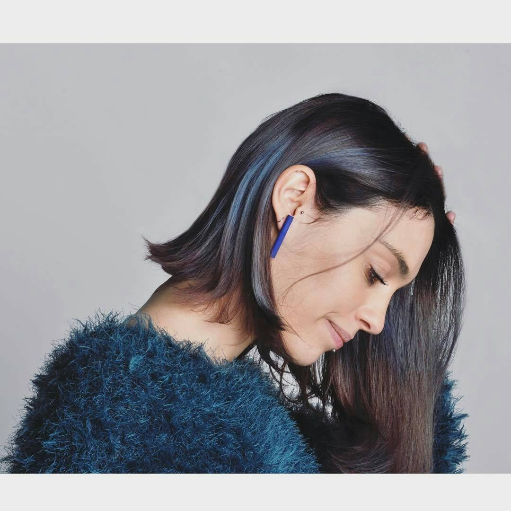

Sono Samantha San Felice. Ho 25 anni, sono nata a Milano il 16 febbraio 1993 e ho sempre vissuto nella mia città natale.
Ho frequentato l’Istituto Tecnico Commerciale Nicola Moreschi, conseguendo il diploma di ragioneria nel 2012.
A seguito di un lutto familiare, terminata la maturità e fino all’anno 2015, ho lavorato come impiegata presso il gruppo finanziario Société Générale, una banca depositaria che si occupa di gestione titoli.
Cessato il contratto con quest'ultima, sono stata licenziata e ho cominciato per davvero ad interrogarmi su cosa avrei voluto fare nella vita, non avendo interesse di proseguire nell’ambito bancario.
Per l'a.a. 2016-2017 ho frequentato la facoltà di Biotecnologie Mediche a Novara, vivendo da fuorisede, ma ho capito che non sarebbe stata la mia strada.
Attualmente sono iscritta al primo anno del corso di laurea in Design degli Interni presso il Politecnico di Milano.
Ho portato e porto avanti diverse passioni in ambito letterario, sociale e sportivo.
Per 12 anni ho praticato lo sport del karate a livello agonistico, raggiungendo il livello di cintura nera 2° DAN.
Dal 2013 svolgo l’attività di primo soccorso presso la Croce Verde A.P.M., sezione di Corsico, coordinata dal 118 di Milano, conseguendo nel 2015 la qualifica di Capo Equipaggio.
Ho un'ottima padronanza della lingua italiana e una buona conoscenza della lingua inglese.
Ho fatto una discreta quantità di viaggi nella mia vita, e fra tutti posso dire che nel cuore porterò sempre la Norvegia e la magnifica aurora boreale che ho avuto l'onore di vedere.
A proposito di passione letteraria… mi piace scrivere poesie ogni tanto, e in passato vinsi anche un concorso.
Sperando possa far piacere, riporto quella che considero la mia poesia "migliore".
Tutte le tue fotografie.
Tutti i tuoi sguardi.
E alla fine sei riuscito a contenere,
in un'angusta iride
tutta la nebbia del mondo
Ad oggi vivo ancora a casa con la mia famiglia, che è così composta:

Per informazioni ulteriori lascio qui il link con il mio Curriculim Vitae.
POLITECNICO DI MILANO - A.A. 2017/2018 - DESIGN DEGLI INTERNI I2 - STRUMENTI E METODI DEL PROGETTO - SAMANTHA SAN FELICE - MATRICOLA 893537
{kind=link}